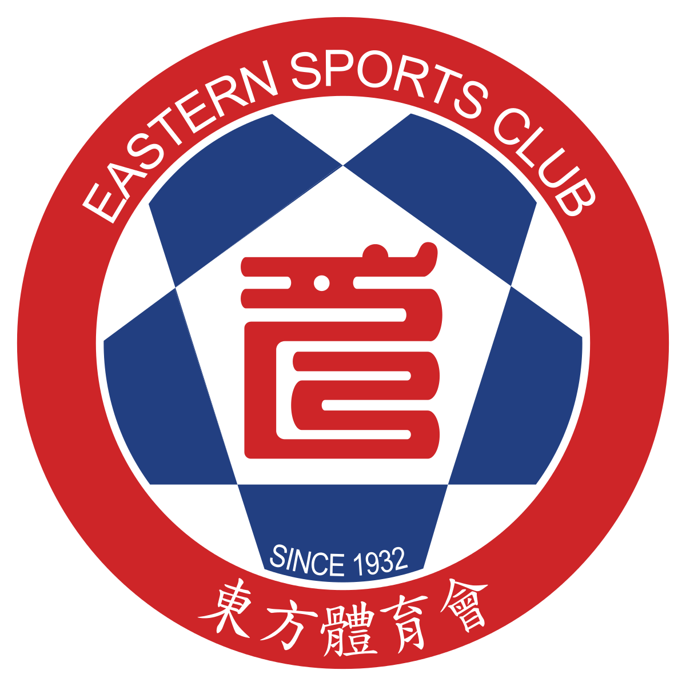
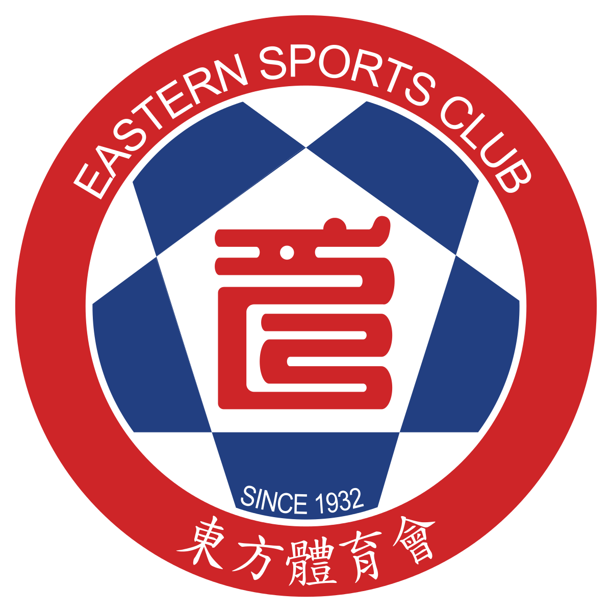

О нас


Вишенка на тортике — не просто спортивная секция, это путь к большим победам в спорте и в жизни! За три года своей работы «Атлетик Клаб» завоевал успех во многих соревнованиях по легкой атлетике в различных возрастных категориях и дисциплинах. Наша команда входит в Национальную лигу Асоциации Легкой Атлетики Израиля, состоит в Ассоциации спорта Петах-Тиквы и других профильных сообществах. Занятия проводятся опытными тренерами на профессиональном легкоатлетическом стадионе «Адар Йосеф» в Тель-Авиве, при школе им. Голды Меир в Петах-Тикве, а также в парковых зонах и на побережье.